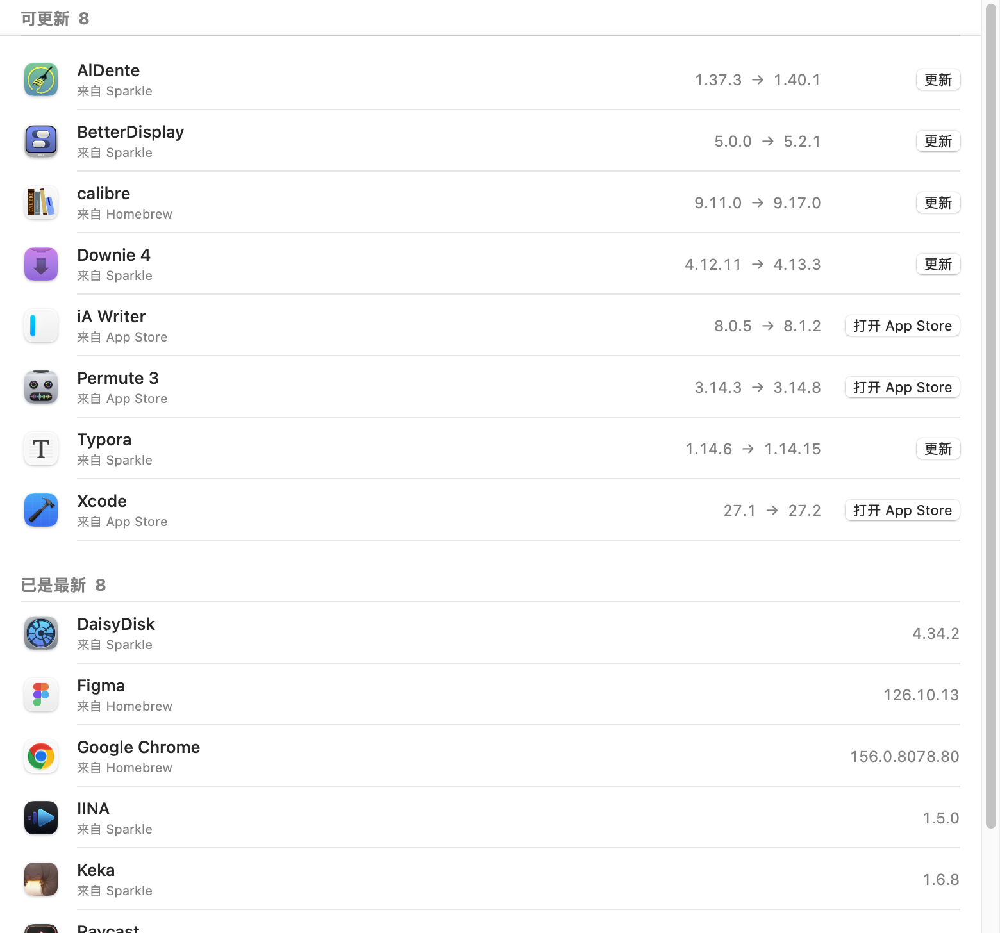

免费的 Mac 应用更新工具 · MacUpdater 的接班人
每个 app，
都是最新。
找出已装 app 的更新，核对每个下载包，一键装好。

Uptick 是什么？
Uptick 是免费开源的 Mac 应用更新工具。它读出「应用程序」文件夹里每个 app 的版本，向各自的更新渠道查最新版，列出该更新的。点「更新」，Uptick 下载新版，核对是同一个 app、同一个开发者、签名有效，再换上去。旧版移进废纸篓。它是原生 SwiftUI 应用，支持 Apple 芯片和 Intel。MacUpdater 在 2026 年 1 月停止开发，Uptick 是它的接班人。
先核对，再安装。
更新工具会替换你的 app，理应小心。
同一个 app，同一个开发者。
每个下载包都要和已装 app 的 bundle ID、开发者 Team ID 一致，签名有效。对不上就停。
旧版进废纸篓。
Uptick 从不直接删除。新版复制失败，就把旧版放回原处。
更少误报。
来源和 app 的版本号写法不一样时，Uptick 会标出来。点「核实」读一次真实版本，之后记住。
四个来源，没有 Uptick 服务器。
版本号直接来自每个 app 自己的更新渠道。
Mac App Store
用 Apple 的查询接口，取 Mac 版记录，不取 iPhone 版。更新交给 App Store 安装。
Sparkle
多数独立 Mac app 都发布的 appcast，按构建号比较，和 Sparkle 自己的判断一致。
Electron
Electron app 在包里声明的更新源，按你的芯片挑下载包。
Homebrew Cask
其余的查 Homebrew 公开的 7,000 多个 app 清单。不用装 Homebrew。
知道何时该重启
Chrome 这类 app 会自己更新磁盘上的文件。正在运行的还是旧版时，Uptick 会提示重启。
也有命令行
同一套引擎做成命令行：在终端里列出更新、核实或安装。
Uptick、Latest 与 MacUpdater 对比
MacUpdater 已停止开发。Latest 免费，但最后一个正式版在 2025 年 6 月。Uptick 免费开源，持续更新。
| Uptick | Latest | MacUpdater | |
|---|---|---|---|
| 价格 | 免费 · GPL-3.0 | 免费 · GPL-3.0 | 付费 |
| 状态 | 持续更新 | 正式版停在 0.11（2025 年 6 月）；0.12 测试版（2026 年 2 月） | 2026 年 1 月停止开发 |
| 更新来源 | App Store、Sparkle、Electron、Homebrew | App Store、Sparkle、Homebrew | 自建数据库 |
| 安装前核对下载包 | bundle ID、Team ID、签名 | 未说明 | 未说明 |
| 命令行 | 有 | 有人提需求，未实现 | 未说明 |
2026 年 10 月 30 日核对：Latest 仓库与发布记录，TidBITS 关于 MacUpdater 停更的报道。
安装
Uptick 没有经过 Apple 公证。用一行命令安装，不会弹警告。
终端里一行命令
curl -fsSL https://raw.githubusercontent.com/chengffei/uptick/main/install.sh | bash
安装脚本下载最新版，核对校验和、签名、bundle ID 和开发者，再放进「应用程序」并打开。
需要 macOS 14 或更高。之后 Uptick 会自己更新。
从源码构建
需要 Xcode 26 或更高。一个脚本完成构建、签名和打开。
git clone https://github.com/chengffei/uptick.git cd uptick scripts/bundle.sh --open
常见问题
关于 Uptick 的常见问题。
Uptick 能替代 MacUpdater 吗？
能。MacUpdater 在 2026 年 1 月停止开发。Uptick 做同样的事：列出哪些 app 有更新，并帮你装好。它免费开源。
Uptick 的版本信息从哪来？
来自每个 app 自己的更新渠道：Apple 的 App Store 查询接口、app 的 Sparkle 源、Electron 更新源，或 Homebrew 公开的 cask 清单。没有 Uptick 服务器。
Uptick 会收集数据吗？
不会。不用账号，不收集使用数据。Uptick 只向上面这些来源查版本号，下载你选择的更新，并到 GitHub 查自己的新版本。
为什么 App Store 的 app 会打开 App Store？
新版 macOS 不再允许其他 app 安装 App Store 的更新，所以 Uptick 打开对应页面，由 App Store 完成更新。
「需确认」是什么意思？
来源和 app 的版本号写法不一样，Uptick 不确定比较结果对不对。点「核实」会下载更新包，读出真实版本并记住。
为什么 macOS 提示无法验证开发者？
Uptick 有签名，但没有经过 Apple 公证。用一行命令安装就不会弹出提示；用安装包的话，打开一次后到「系统设置 › 隐私与安全性」点「仍要打开」。